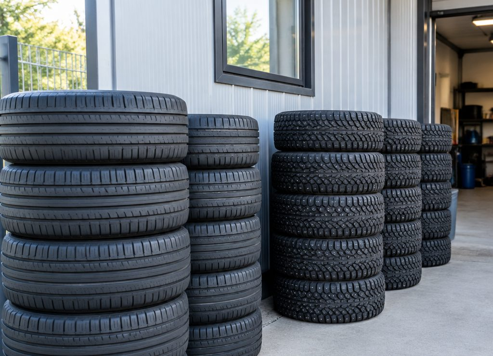
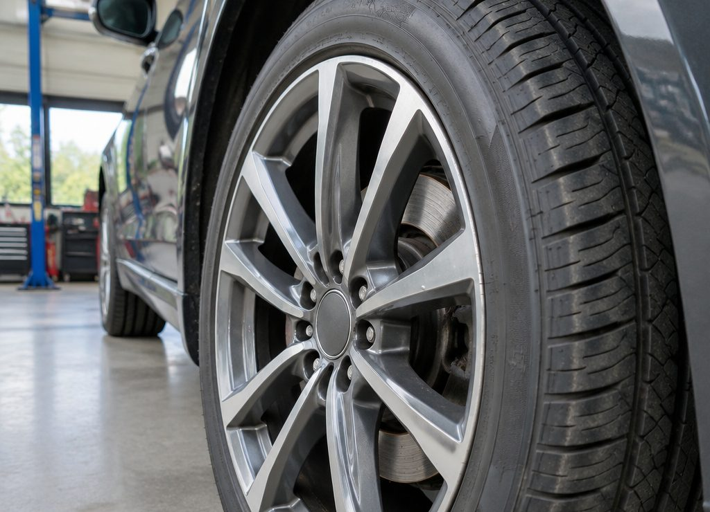

Январь: спокойно
Зима в разгаре. Обычно спокойно: люди приезжают с проколами и проверкой давления после морозов.
Если шины спускают за ночь — приезжайте, жгут занимает минуты, а ездить на приспущенном колесе дороже.

Два пика
Ноябрь
и апрель
В шиномонтаже два предсказуемых пика: конец октября — начало ноября, когда все ставят зимние шины, и апрель, когда возвращают летние. В эти недели загрузка максимальная.
Всё остальное время — спокойно. Именно поэтому сервис в 11 км от Бреста удобен: сюда едут не за атмосферой, а чтобы не потерять вечер в очереди.
Советы
Как не попасть
в пик
Четыре простых правила, которые экономят вечер.
За неделю до пика
В конце октября и в конце марта звонят меньше всего, а работы столько же.
Утром, а не вечером
В сезон утро — самое свободное окно: вечером приезжают после работы все сразу.
Комплект целиком
Приехать с четырьмя колёсами за один раз быстрее, чем дважды по два.
Диски заранее
Если шины на литье, предупредите: это влияет и на время, и на аккуратность работы.
Важно
Про порог +7 °C
Летняя резина теряет эластичность уже при +7 °C: тормозной путь на холодном асфальте растёт, а сама шина дубеет. Поэтому зимние шины стоит ставить не после первого снега, а до устойчивых ночных заморозков.
Обратное тоже верно: весной не тяните с летними до жары — зимняя шина на горячем асфальте стирается заметно быстрее и ведёт себя хуже в повороте.
Данные о загрузке в календаре — типичная картина сезона, а не онлайн-запись. Свободное время уточняйте по телефону.
